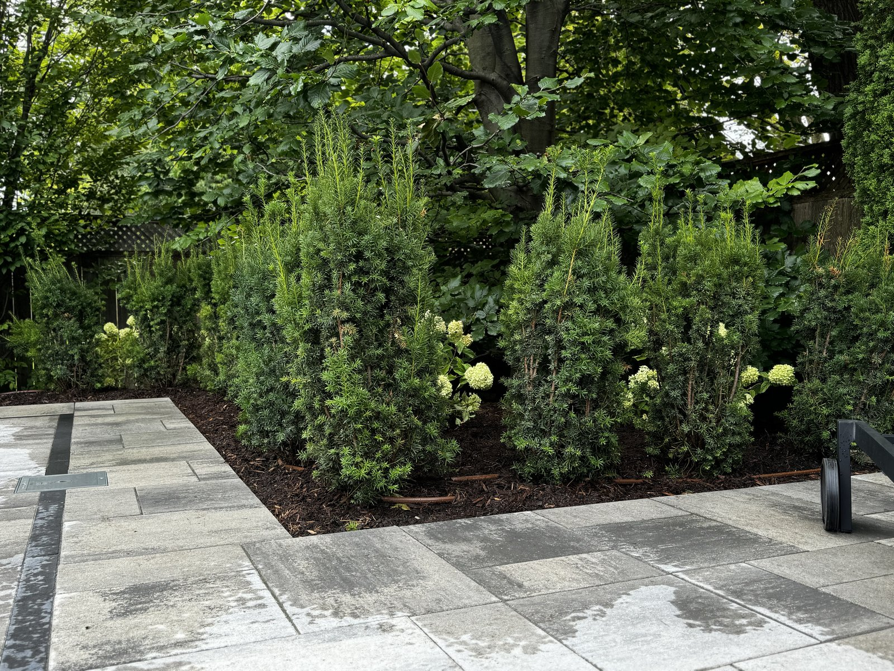
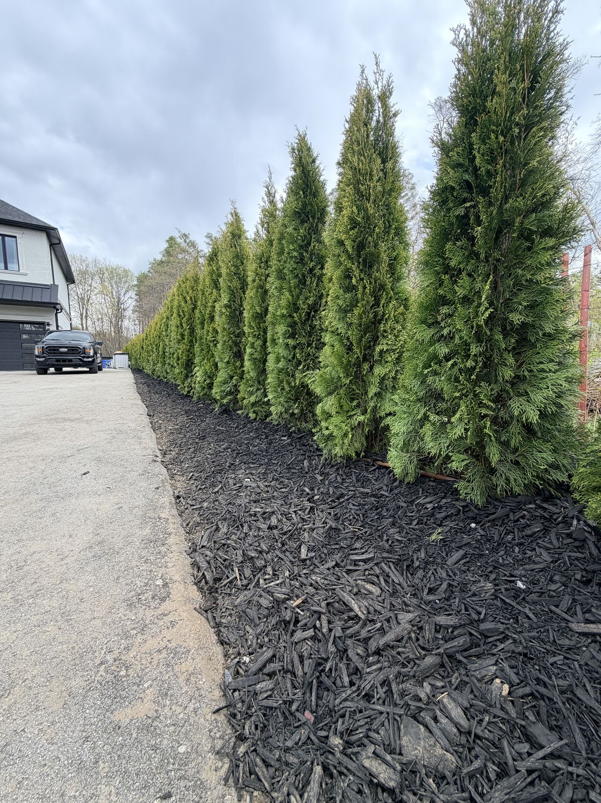
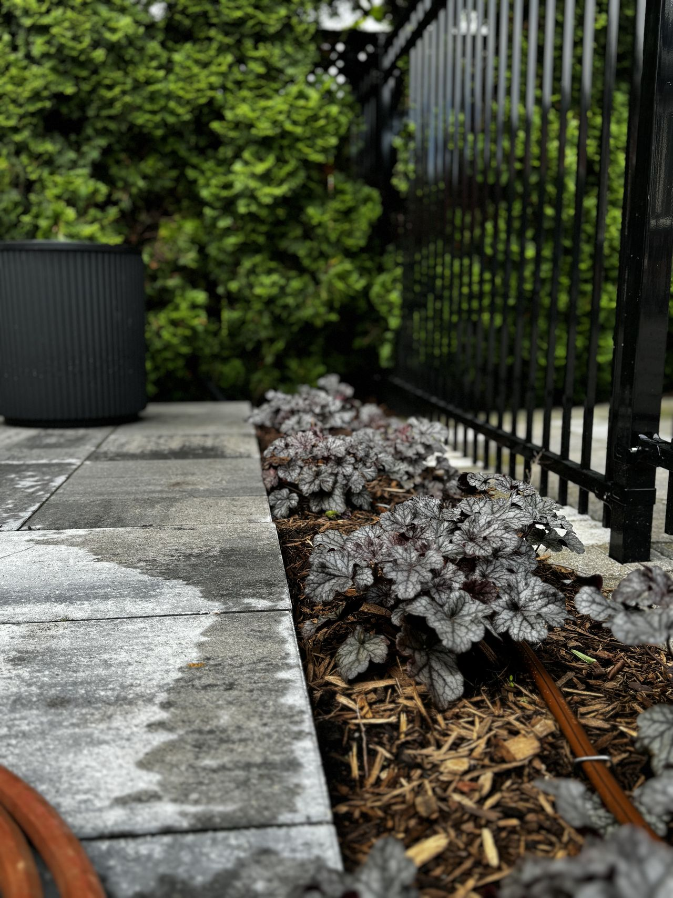
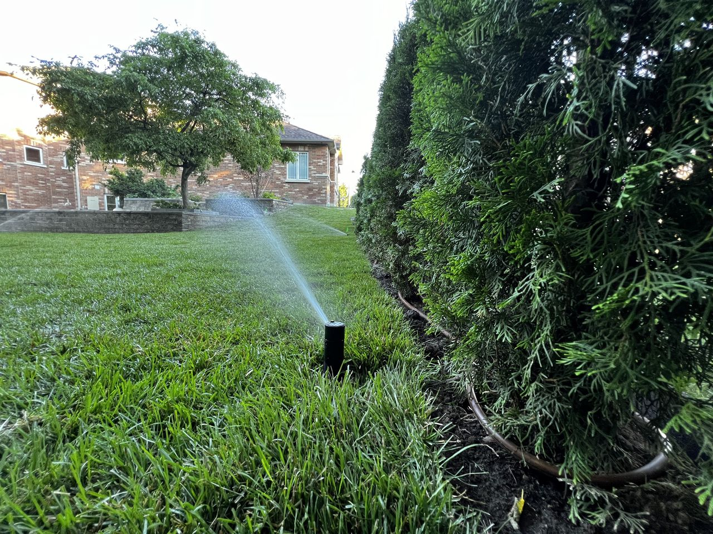

Lately, most of the garden-bed irrigation we're installing in Newmarket, Aurora, King City and Stouffville is no longer spray. It's drip.
This wasn't a marketing decision. It came out of two seasons of watching beds water themselves on the same properties — some on conventional spray, some on Rain Bird XF dripline — and seeing which beds looked better in August. Drip won. Decisively.
That doesn't mean spray heads are wrong. They still have a place in irrigation, and we still install them when the bed makes sense for it. But for cedar hedges, perennial borders, foundation plantings, shrub beds and most established planting beds, dripline now gets specified by default.
Here's the case for why — and why dripline beats soaker hose by a margin most homeowners don't realize.
The efficiency principle: water the root, not the air
A plant doesn't drink through its leaves. It drinks through its roots.
Spray irrigation throws water through the air, lands it on foliage, mulch, hardscape and bare soil, and lets it work its way down to where the roots actually are. On a windless cool morning, that works. On a windy hot afternoon — which is most of June through August in southern Ontario — you can lose 25-35% of that water to wind drift and evaporation before it ever hits the ground.
Dripline delivers water at soil level, under mulch, directly above the root zone. There's no spray, no drift, no overspray on the driveway, no wet foliage that promotes fungal issues in dense plantings. Every litre that leaves the emitter goes into soil.
EPA WaterSense estimates conventional spray irrigation operates at roughly 65–75% efficiency under good conditions. Properly designed dripline operates above 90%. On a typical York Region property with 4-6 bed zones running three days a week, that gap translates to meaningful water savings every month — and a real impact on a Region of York water bill once the volumetric tiers kick in.

But efficiency isn't even the most interesting part. The most interesting part is what happens at the plant.
Where spray heads quietly fail in garden beds
Spray heads do three things in a bed that nobody talks about:
They water the spaces between plants more than the plants themselves. A spray pattern is a cone. Plants are not arranged in cones. If a bed has irregular spacing, mature shrubs, varied plant heights, or a hardscape edge, a spray head waters a lot of square footage that doesn't need water and skips edges where roots actually live.
They spill water onto surfaces. Walkways, mulch surfaces, fence boards, neighbouring lawn — all of these catch overspray that the plant never sees. That water either evaporates or runs off. The Hydrawise app calls this out clearly when it does seasonal adjustments: spray zones consistently over-water by 15-25% even after smart adjustments, because the controller can't compensate for what the head was never going to deliver to the right place anyway.
They wet foliage in shaded beds. In a cedar hedge or a packed perennial bed, foliage stays wet longer when sprayed from above. That's how powdery mildew and other fungal issues start. It's also how cedars lose their bottom green. The plant looks fine for a season or two, then quietly declines.
None of this means spray is broken. It means spray is the wrong tool for most bed scenarios. It's the right tool for open turf, and it's the right tool for a small annual flower bed that gets replanted every year. Most other beds — and certainly most established beds — want their water delivered differently.
That's where dripline comes in. But not all dripline is the same product, which brings us to the comparison most homeowners actually need.
Rain Bird XF dripline vs soaker hose — same idea, very different result
When customers ask us about drip irrigation, the first thing they usually mention is a soaker hose they tried years ago, bought from a big-box garden centre. That hose worked for a season, then started watering unevenly, then clogged, then got brittle and split. They're not wrong about what happened. That's how soaker hoses behave.
Soaker hose and engineered dripline solve the same problem in two completely different ways. Here's how they compare.
How each one works
Soaker hose is a porous rubber or polyethylene tube — often made from recycled tire material — designed to leak water along its entire length. Pressure from the tap pushes water through the wall of the hose wherever the pores are. There's no pressure regulation, no flow control, no emission points.
Rain Bird XF dripline (we install the XFDE series, 0.9 GPH emitters at 12-inch spacing) is heavy-wall polyethylene tubing with pressure-compensating emitters molded into the inside wall at precise intervals. Each emitter is an engineered device with a flexible diaphragm that delivers the same flow rate whether it sits at the start of the run or 200 feet down the line, and whether the supply pressure is 15 PSI or 50 PSI. Copper oxide is embedded into the emitter material to inhibit root intrusion. The check-valve version (XFCV) prevents low-point drainage between cycles.
That difference — random porosity vs engineered precision — is the entire story.

Lifespan
| Product | Typical service life (buried under mulch) | Failure mode |
|---|---|---|
| Soaker hose (big-box garden grade) | 2-4 years | Pores clog from sediment and root intrusion; rubber becomes brittle; flow drops to near-zero |
| Soaker hose (premium / commercial) | 4-6 years | Same failure modes, slightly delayed |
| Rain Bird XF dripline | 10+ years | Designed for permanent installation; emitters self-flush; copper oxide resists root intrusion |
We've pulled up soaker hose installations from properties we took over from previous installers. After three or four seasons, the hose is usually delivering water unevenly along its length, the far end is bone dry, and large stretches have stopped emitting entirely. The homeowner doesn't know — the bed just slowly looks worse.
XF dripline is built to go in the ground and stay there. It's the same product Rain Bird specs for commercial installations expected to run for a decade. When we install it on a Newmarket cedar hedge or a King City foundation planting, we're treating it like part of the landscape, not a consumable.
Accuracy and uniformity
This is the part homeowners rarely think about until we explain it.
A soaker hose loses pressure as water travels along its length. The first 10 feet emit more water than the last 10 feet — sometimes dramatically. Run a soaker hose 50 feet along a cedar hedge in Aurora, and the cedars near the spigot end up over-watered while the ones at the far end are under-watered. You can't fix that without re-plumbing the layout.
Rain Bird XF dripline solves this with pressure-compensating emitters. Every emitter along the full length of the run — up to 343 feet for the 0.9 GPH XFDE product, depending on inlet pressure — delivers the same 0.9 gallons per hour. The cedars at the start of the run and the cedars at the end of the run get exactly the same volume of water. That's the difference between a hedge that grows evenly and a hedge with bald spots at one end.
Clog resistance and serviceability
Soaker hose pores clog from anything — sediment in the water supply, mineral deposits, organic matter in the mulch, root intrusion. When a section clogs, there's no way to identify it from above ground and no way to fix it short of replacement.
XF dripline emitters are physically larger than soaker pores and self-flush at the start and end of each watering cycle. The runs are also serviceable — if a section ever does fail, we can isolate it, splice it out with 17mm fittings, and replace just that section. The rest of the zone keeps running.
When we still install spray in beds
To be honest about it: not every bed should be drip.
Spray still wins for:
- Annual flower beds that get replanted every spring. Dripline gets disturbed by replanting. Spray heads are easier to work around.
- Low groundcovers under 4 inches that cover the bed surface completely. A low pop-up nozzle with a matched-precipitation rotator can work well here.
- Very small isolated bed pockets where the cost of running dripline out to them doesn't make sense — we'll sometimes use a single low-flow micro-spray on a riser.
Outside those cases, drip is the default we now propose. The math is consistent: lower water use, better plant health, less hardscape over-spray, longer system life.
What a drip retrofit looks like on an existing PJL system
If you already have a PJL-installed system with spray heads in beds, converting a single bed zone to drip is a straightforward retrofit. We do this regularly, often as part of a spring opening or a system upgrade.
The work involves replacing the spray heads in that zone with a manifold at one head location, running 17mm XF dripline through the bed under the mulch, securing it with 6-inch galvanized staples, capping the remaining spray-head risers, and adding a 30 PSI pressure regulator and filter at the zone start. The Hydrawise controller then gets the zone runtime adjusted — drip zones run longer per cycle but less frequently than spray zones.
Our published add-on for a garden-bed drip zone is $210, which covers most beds up to 200 square feet on an existing system. Larger beds or full-property drip retrofits are quoted per site after we walk the property.

"The single most satisfying retrofit we do is a cedar hedge that's been on spray for ten years. The homeowner has been replacing the dead ones at the dry end every couple of seasons. We swap the zone to XF dripline in an afternoon. Two seasons later, the whole hedge has filled in — same colour, same density, top to bottom. That's the visible part of what drip does."
The bottom line
Drip beats soaker hose on every metric that matters: lifespan, uniformity, clog resistance, serviceability. And on most established garden beds, engineered dripline beats spray on water efficiency, plant health and aesthetic outcome.
That's why most of our 2026 bed work is going in as Rain Bird XF dripline. It's not the cheapest option per square foot at install. It is the cheapest option per square foot over a decade of service, by a wide margin.
If you've been watching your beds underperform on spray, or you're tired of pulling clogged soaker hose out every few years, this is the upgrade most homeowners in Newmarket, Aurora, King City and Stouffville should be looking at.
Want to see if drip is right for your beds?
Our AI Smart Intake can give you a same-day quote for a drip retrofit on an existing system, or a full-property drip-and-spray design for a new install. Bed photos help — share them when prompted.
Get a quote Or call (905) 960-0181 — Patrick answers personally during business hours.Frequently asked questions
Can drip line freeze in Ontario winters?
Yes, like any irrigation component holding water. We winterize drip zones the same way we winterize spray zones — fall blow-out with low-pressure compressed air. The XFCV (check-valve) version of Rain Bird XF dripline also self-drains between cycles, which helps. We winterize drip-equipped systems as part of our standard fall closing service.
Will drip line clog from the well water or city water in York Region?
City water in York Region (Newmarket, Aurora, King City, Vaughan) is filtered and treated well enough that XF dripline runs reliably without supplemental filtration in most cases. On well-water properties, or city installs with older galvanized supply, we install a 200-mesh filter at the zone manifold. The Rain Bird emitter design is more clog-tolerant than soaker hose by an order of magnitude.
How deep should drip line be buried?
For most garden beds, we run XF dripline directly on the soil surface under 2-3 inches of mulch. That keeps it out of UV, hidden from view, and accessible if it ever needs service. For lawn-edge drip (rare) or vegetable garden installs, we'll go 2-4 inches into the soil itself.
Can I convert just one bed zone from spray to drip, or do I have to redo the whole system?
Single-zone conversions are common and straightforward. As long as the existing zone has its own valve at the manifold, we can swap the spray heads for a drip manifold and run new dripline without touching the rest of the system. Most single-bed drip retrofits are completed in one visit.